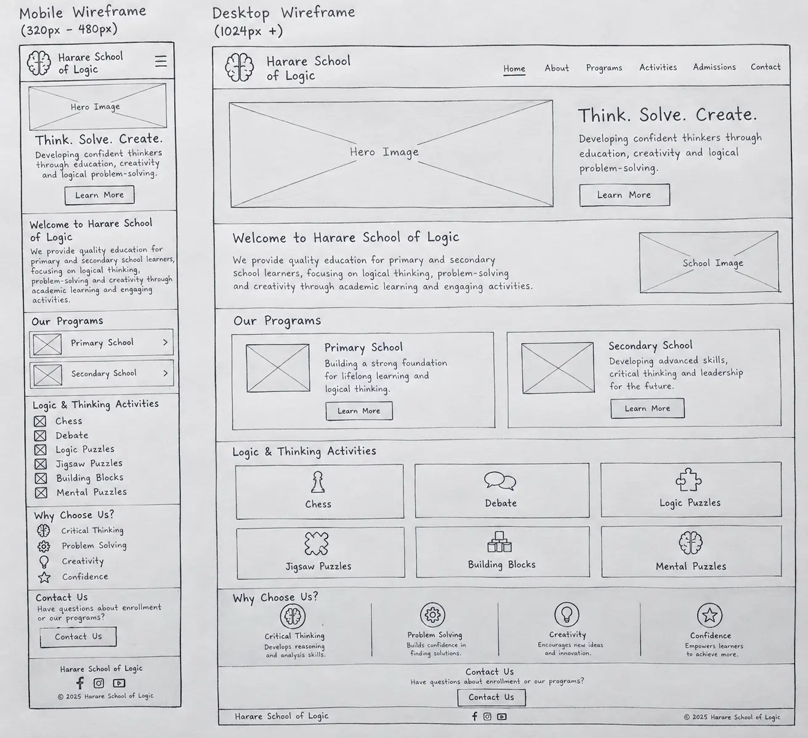

Harare School of Logic – Website Plan
Site Name
Harare School of Logic
The name Harare School of Logic was selected because it clearly identifies the school and its main
educational focus. The school is based in Harare and aims to help primary and secondary school learners develop
logical thinking, reasoning, problem-solving and decision making skills.
Proposed domain: hsol.co.zw
Site Purpose
The purpose of the Harare School of Logic website is to provide information about the school and its approach to
developing learners through academic education and activities that strengthen logical and critical thinking.
The website will provide information about:
The school's mission and educational philosophy.
Programs offered to primary and secondary school learners.
Logic and thinking activities offered by the school.
Games and activities such as chess, debate, logic puzzles, jigsaw puzzles, building blocks, and mental
disentanglement puzzles.
School news and upcoming activities.
Admission and enrollment information.
Contact information and location.
Opportunities for parents to learn how the school supports their children's intellectual development.
The website will serve as an information hub for parents, learners, teachers and other people interested in the
school's educational programs.
Scenarios
The following questions represent information that potential visitors may want to find on the website:
1. What programs does Harare School of Logic offer for primary and secondary school learners?
2. What activities does the school use to develop learners' logical thinking and problem-solving skills?
3. How can I enroll my child at Harare School of Logic?
4. Does the school offer chess, debate, puzzles, and other thinking activities?
5. Where is Harare School of Logic located and how can I contact the school?
6. How does the school's approach help children develop critical thinking and creativity?
Color Scheme
The website will use a combination of deep blue, gold, white, and light gray. These colors will give the
website a professional educational appearance while providing enough contrast for easy reading.
Deep Blue – #12355B
Deep blue will be the primary color of the website.
It will be used for:
Header background
Main headings
Navigation elements
Important section titles
Footer background
Blue represents knowledge, trust, focus, and professionalism.
Gold – #F4B942
Gold will be used as an accent color.
It will be used for:
Buttons
Highlights
Borders
Important links
Icons
Call-to-action sections
Gold provides visual emphasis and represents achievement and intellectual growth.
White – #FFFFFF
White will be used primarily for:
Main page backgrounds
Content areas
Cards
Navigation text where appropriate
White will provide space and improve readability.
Light Gray – #F2F4F7
Light gray will be used for:
Alternating section backgrounds
Information cards
Form areas
Secondary content sections
This will help separate sections without making the page visually crowded.
Typography
The website will use two fonts.
Headings – Poppins
Poppins will be used for:
Main page headings
Section headings
Navigation headings
Buttons
Important titles
Poppins has a modern and clear appearance that will help give the school website a contemporary educational
identity.
Body Text – Open Sans
Open Sans will be used for:
Paragraphs
Descriptions
Forms
Lists
General website content
Open Sans is highly readable and will make the website easy for parents and learners to use on both
computers and mobile devices.
Wireframe
The website will use a responsive design that works on both mobile devices and larger computer screens.

The mobile version will display the navigation menu in a compact format and arrange content in a single
column. On larger screens, the navigation will appear horizontally and content cards will be arranged in
multiple columns.
Images and text will resize automatically so that the website remains easy to use on phones, tablets,
and desktop computers.